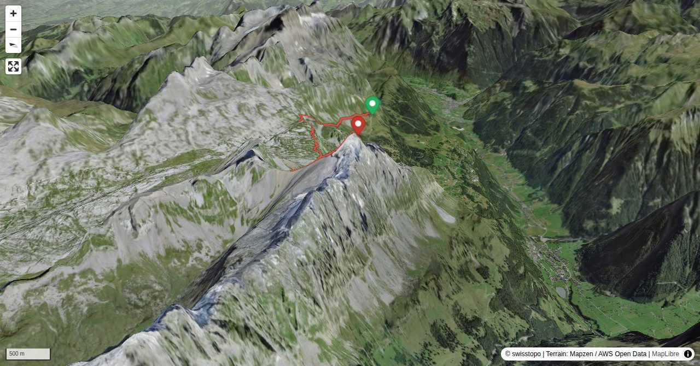

The Ortstock forms a imposing backdrop to Braunwald, though when viewed from Glattalp it is a rather inconspicuous scree cone. The summit panorama gives exceptional views down to Braunwald and into Linthtal. The western or "Hinter" Ortstock (P. 2717) is accessible via easy mountain trails and is often done. From Glattalp or from Braunwald's 'Gumen' cable car station, two equally long and similarly difficult routes lead to the summit. The route described here from Gumen is more varied than the one from Glattalp.
Without the use of the chairlift to the Gumen, the ascent will be 1.5 to 2 hours longer (+ 700 hm).
Quick Facts
| Summit elevation | 2717 m |
|---|---|
| Difficulty | SAC T3 Demanding mountain hiking with possible exposure and a real need for sure-footedness. Guide |
| Trailhead | Gumen, Bergstation |
| Region | Eastern Switzerland |
| Canton | Schwyz |
| Distance | 7.6 km (out-and-back) |
| Total ascent | ~1117 m |
| Elevation range | 1900-2716 m |
| Route sources | SAC Route Portal |
| Route author | Hansueli Rhyner (via SAC Route Portal) |
Photos

Ortstock via Bützi (9/2018)
© Hansueli Rhyner
Ortstock and Höchturm (right) with the Furggele pass between (2011)
© Rhyner HansueliPhotos: Hansueli Rhyner, and Rhyner Hansueli — via SAC Route Portal
Planning
i
i
sac_scale (precise T1–T6) with
swissTLM3D Wanderwegart
fallback where OSM is silent (coarser T2/T3 and T4+ buckets).
Coverage: OSM 87.8% · swisstopo 12.0% · unknown 0.0%.Elevations computed from the inlined GPX track (SwissTopo height API).
Loading forecast…
Start: Gumen, Bergstation (1900 m)
Route returns to Gumen, Bergstation.
3D Terrain View

Route Details
From Gumen via the Ortstock's Furggele Pass
- Without the use of the chairlift to the Gumen, the ascent will be 1.5 to 2 hours longer (+ 700 hm). The descent variant via "Bärentritt" to Braunwald takes about the same amount of time as the way to the cable car station at Gumen, but is more demanding on the knees with more vertical metres.
Terrain & safety
The hiker is strongly advised to follow the marked footpath. In foggy or snowy conditions, this area can be very challenging.
Source: SAC Route Portal
Field Reference
| Trailhead | Gumen, Bergstation | 46.95600, 8.98520 |
|---|---|---|
| Summit | Ortstock (2717 m) | 46.92539, 8.94819 |
Coordinates are WGS84 decimal degrees (lat, lon). Emergency: 112 (general) or 1414 (Rega air rescue). Page URL: